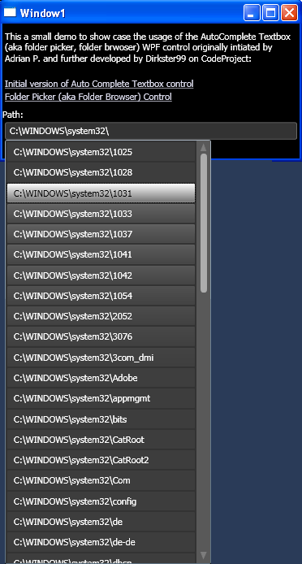
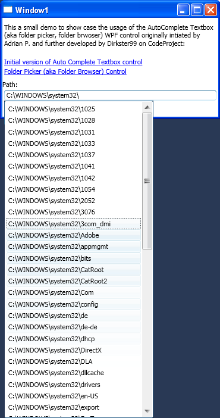
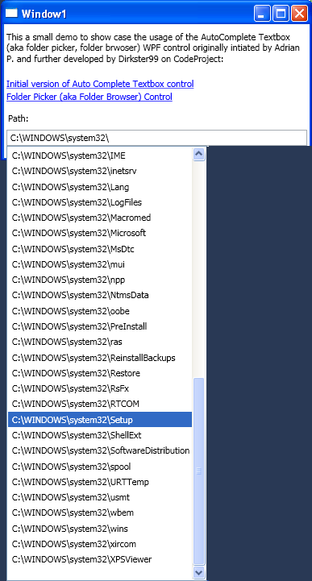
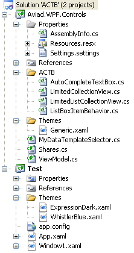

An overview of the Autocomplete TextBox using different the WhistlerBlue, ExpressionDark, or no theme
ExpressionDark:

WhistlerBlue:

No Theme:

Introduction
This article is based on the excellent article "A Reusable WPF Autocomplete TextBox" by Aviad P.
I wrote it because I wanted to show just how flexible binding and theming in WPF really is.
Therefore, I:
- replaced the XML binding with bindings to run-time objects,
- changed the data source of the ViewModel to
System.IO.Directory... to auto-complete over sub directories,
- and added two themes (ExpressionDark, WhistlerBlue) to the mix.
The resulting control can be used to auto complete folders that have been typed into a textbox. Uniform Naming Convention (UNC) is supported.
The ViewModel persists a list of recently typed \\server\share addresses into an XML file that is stored in the Application Data directory (see Window1.xaml.cs for details).
Background
I have been looking for a skinable auto complete folder browser (folder picker) control that allows the selection of a folder just like the address bar in the Windows Explorer does.
All sample implementations that I found seemed to be based on comboboxes. These have the disadvantage of implementing the standard combobox behaviour,
which is rather strange when the user picks one entry and the popup-list disappears (the text in the textbox is selected).
I wanted a control that supports the following workflow:
- The user types a path into the textbox portion of the control
- The control suggests a list of sub-entries (if any)
- The user selects an entry
- The control adds the selected entry to the typed path in the textbox and adds a directory delimter (\)
Note that the last three steps are repeated until the final path is in the textbox (user can hit the ESC key to make the pop-list disappear). This way, a user is no longer being
bothered typing much of an address at all. The user can use the mouse or the keyboard to browse the file system structure via pop-up and the path displayed in the textbox.
Using the code
StyleCop
I use StyleCop in my projects to make the code readable in a uniform way. So, you can either download and install StyleCop, or edit/remove the corresponding
entries in each .csproj file, should you get an error when compiling the project:
<Import Project="$(ProgramFiles)\MSBuild\StyleCop\v4.5\StyleCop.Targets" />
Project structure
The project has the following structure:
|

|
The Test project contains a test application (to be replaced by your own) and
the Aviad.WPF.Controls project contains the DLL project. You should be able to hit F5,
and give this a go, if the Test project is your start-up project.
The ViewModel.cs file is where the background queries for the sub-directory entries are implemented (more details further below).
I moved ViewModel.cs and MyDataTemplateSelector.cs into the DLL project,
because I wanted the control to be available and usable without having to think about these details.
The ShareCollection class in the Shares.cs file is used in the ViewModel class whenever the
user types a UNC path containing only a name of a file server without shares (eg.: \\MyFileServer\). Note that I added the Themes folder
in the Test project. This is where the themes for ExpressionDark and WhistlerBlue live. While the Themes folder in the ACTB project
contains only the Gerneric theme (which is used if WPF cannot find a style in any other resource).
The AutoCompleteTextBox control is themed with the style defined in Generic.xaml. This style is applied, if the system cannot find corresponding
styles in any other theme (if any). The ExpressionDark.xaml and WhistlerBlue.xaml files contain AutoCompleteTextBox styles for the corresponding themes.
Therefore, the style in Generic.xaml is completely ignored if either theme is activated in App.xaml.
|
Changing the theme is possible via an entry in the App.xaml file. Enter WhistlerBlue.xaml or ExpressionDark.xaml in the highlighted location below (I know this
can be done at run-time via radio control (or whatever), but I chose to leave it like this because I wanted to leave the sample as simple as possible).
<Application x:Class="Test.App"
xmlns="http://schemas.microsoft.com/winfx/2006/xaml/presentation"
xmlns:x="http://schemas.microsoft.com/winfx/2006/xaml"
xmlns:actb="clr-namespace:Aviad.WPF.Controls;assembly=Aviad.WPF.Controls"
xmlns:local="clr-namespace:Test"
StartupUri="Window1.xaml">
<Application.Resources>
<ResourceDictionary>
<ResourceDictionary.MergedDictionaries>
<ResourceDictionary Source="Themes/ExpressionDark.xaml">
</ResourceDictionary>
</ResourceDictionary.MergedDictionaries>
</ResourceDictionary>
</Application.Resources>
</Application>
Here are the settings that I used for the screenshots in Table 1:
- ExpressionDark:
- Set Themes/ExpressionDark.xaml in the
Application.Resources tag in App.xaml.
- WhistlerBlue:
- Set Themes/WhistlerBlue.xaml in the
Application.Resources tag in App.xaml.
- No Theme:
- Remove the Themes/*.xaml entry from the
Application.Resources tag in App.xaml.
- Remove or re-define themed
StaticResource entries in Window1.xaml:
Background="{StaticResource MyWindowBackgroundBrush}" in Window tagForeground="{StaticResource TextBrush}" in TextBlock tag
Points of interest
The QueryList method in the ViewModel class is the main function executed whenever the control
attempts to query the system for additional entries. Additional entries can be queried from the file system via the
System.IO.Directory.GetDirectories function or (for UNC) via the ShareCollection class defined in Shares.cs.
Both process, typing in the textbox, and queries for sub-directories, are disconnected from each other,
because each query for sub-directories is executed in a background thread. This is all done without having to use another thread class (!), but instead, by implementing
the PriorityBinding construct in the Window1.xam file. Actually, this was already implemented in the original version of the control,
but I thought I should point this out so we all understand why this is working the way it works...
I also realized that I could not be bothered to re-type the same \\server\shared folder\ address over and over and over again...
Therefore, we have data handling for a custom list of \\server\shared folder\ entries in the ViewModel class.
The ViewModel class is XML serializable. It is persisted and initialized from disk whenever the window in Window1.xaml.cs
is closed or constructed. Please review the List<string> SuggestEntries property in the ViewModel class
and the corresponding methods in Window1.xaml.cs to fully understand this addition.
I noticed a small problem in an earlier version of the control. The selection color of the drop-down list was sometimes off
(it was Blue). This was due to the fact that I had no ListBoxItem style within the ListBox style
of the AutocompleteTextBox.Popup. The key to styling this correctly is the ItemContainerStyle property
in the <Style TargetType="{x:Type aviad:AutoCompleteTextBox}"> section in the ExpressionDark.xaml and WhistlerBlue.xaml files.
I would have liked to make the WaitMessage disappear, while keeping the architecture with the PriorityBinding in Window1.xaml.
But I was unable to find an easy way of doing this. Please let me know if you see a simple solution for removing the WaitMessage without re-implementing the whole control.
Please give me your feedback if there are any other "obvious" improvements that I might have missed.
History
- 25th October, 2011: Initial post.
- 22th November, 2011:
- Bug fix on asynchronous query and correct usage of
CollectionViewSource in Window1.xaml.
- Added classes in Shares.cs to query folder shares of file servers via UNC notation.
- Added styling for
ItemContainerStyle in AutoCompleteTextbox
styles and improved styles in each theme (events, such as mouseover, focus, etc., result in fade in or fade out of some GUI elements).